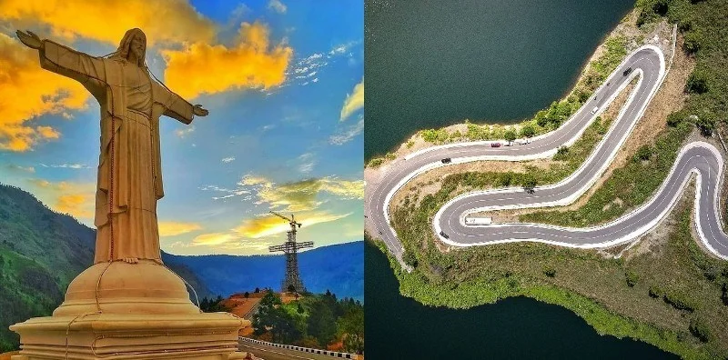

Sibeabea

Bukit sibea-bea destinasi religi yang terletak di Harian Boho, kabupaten Samosir,Sumatra utara,Indonesia.Daya tarik utama objek wisata ini hadirnya sebuah patung Tuhan Yesus di puncak bukit Sibea-bea dengan tinggi 61 m dan selalu di padati pengunjug setiap harinya ,keelokan alam hijau berpadu dengan Danau Toba bisa dinikmati dari sini jalur trek berkeloknya pun terlihat menawan.Selain patung Yesus Kristus,kawasan wisata ini dilengkapi dengan rumah doa,wisata kuliner,dan paranoma alam Danau Toba.
